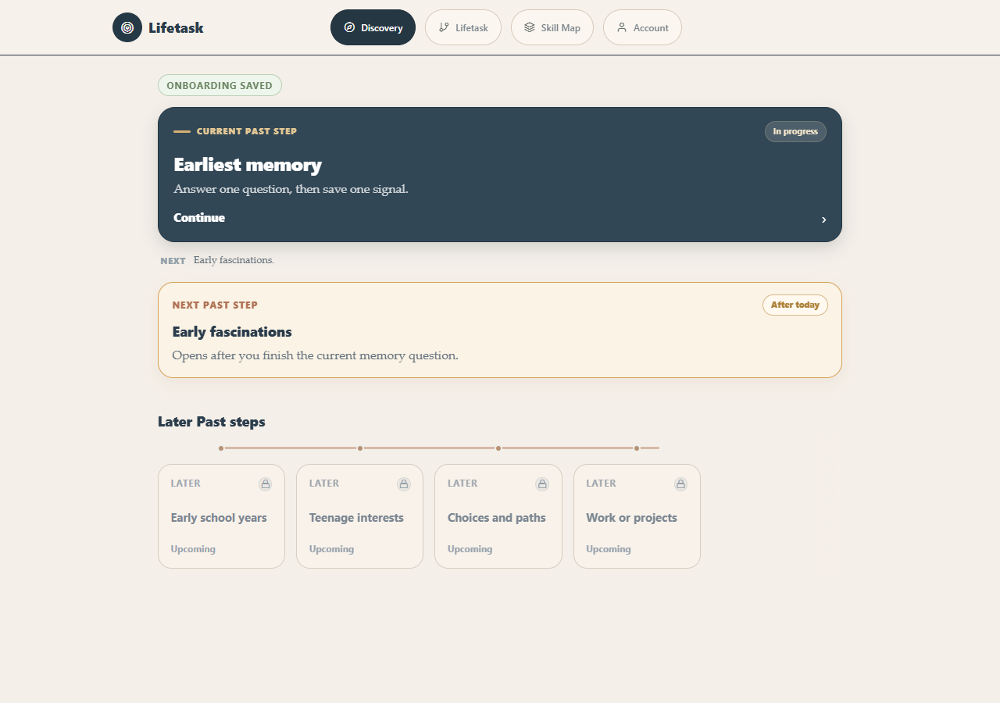
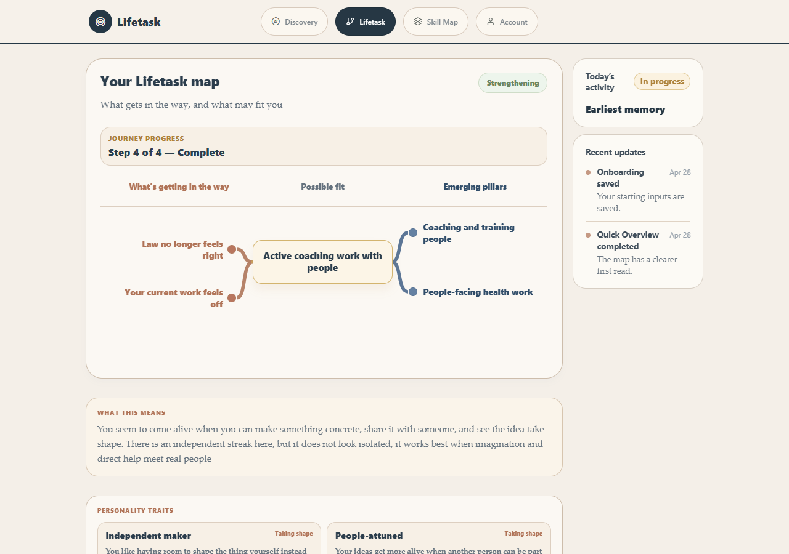
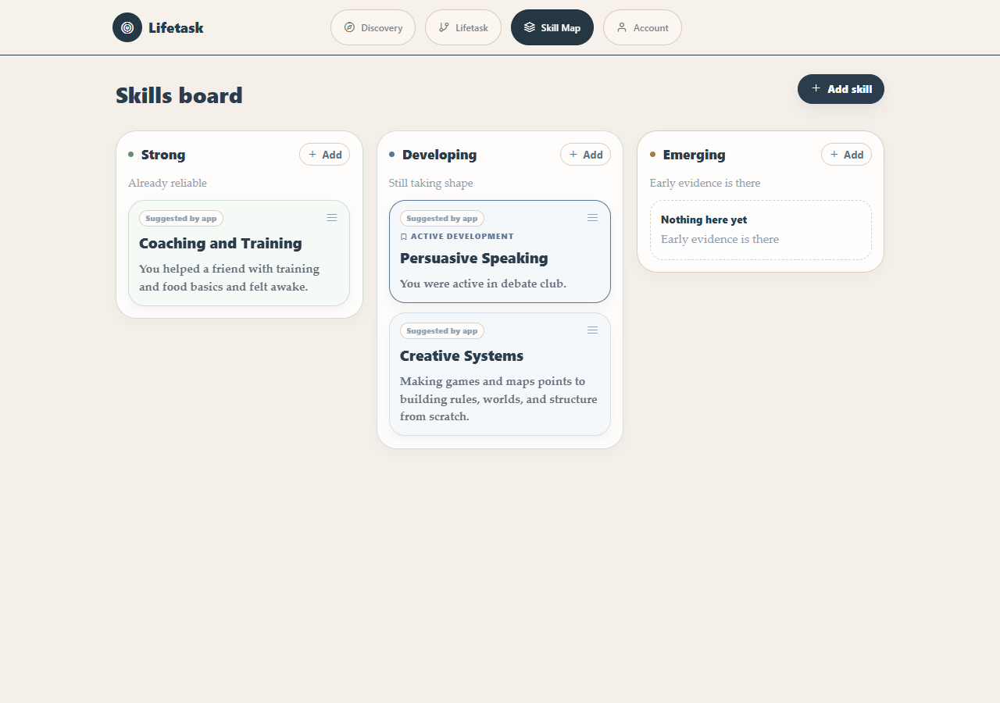

Deep Dive
Understand how your experiences have shaped your personality, skills, and intrinsic interests.
LifeTask guides you through focused reflection so your past experiences, skills, and recurring patterns become a clearer work direction.
Start nowUnderstand how your experiences have shaped your personality, skills, and intrinsic interests.
Turn lived examples into strengths, developing skills, and early signals worth tracking.
Build a living map of what fits, what gets in the way, and what kind of work gives you energy.
What the app does
Onboarding and Quick Overview ask what brought you here, what feels hard, and what directions keep coming up.
The app synthesizes your answers into direction signals, frictions, strengths, and patterns without turning every sentence into clutter.
LifeTask identifies skills from your lived examples, then lets you confirm what feels strong, developing, or emerging.
App preview



How it works
Start with a short guided prompt about your past, your current friction, or what keeps pulling at you.
If an answer is too vague, the app asks a focused follow-up instead of forcing a long worksheet.
New evidence strengthens, revises, or simplifies the map so the picture stays useful.
Who it is for
Students or early-career builders choosing what to pursue next.
Professionals who feel underused, misfit, or split between several directions.
Founders, creators, and independent workers trying to understand what kind of work gives them energy.
Trylifetask.com
LifeTask is being built for people who want a more personal, evidence-based way to understand their next direction.
Get early access